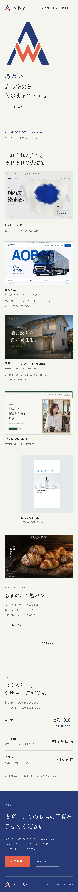
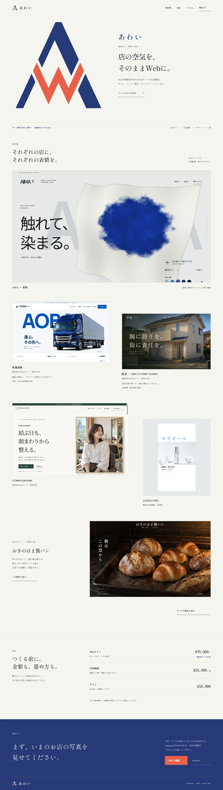
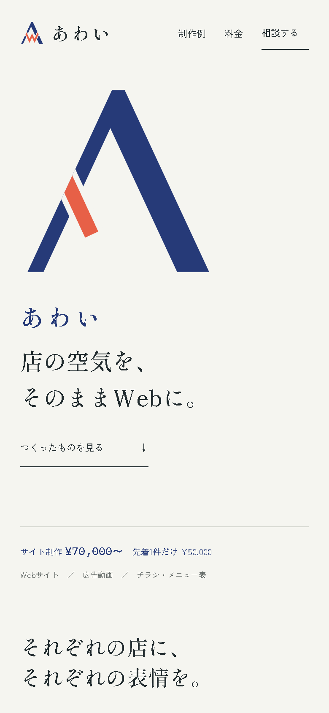
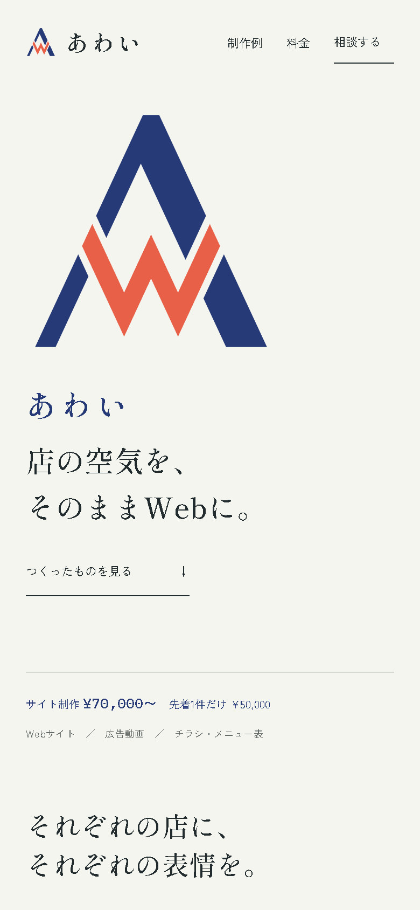

スマホ版の全体 画像を開いて拡大

PC版の全体 画像を開いて拡大

最初の画面に、あわいの印（ロゴの記号）を大きく置きました。藍色のAの手前を、朱色のWが横切る形です。ページを開くと、そのWがひと筆で描かれて止まります。
朱を使うのは、印のWと「LINEで相談」のボタンだけです。制作例・料金・相談の並びは、11月8日に見てもらった「藍の明朝の入口」の案と同じで、色だけを印に合わせました。いま公開中のポートフォリオは、まだ変えていません。
実際に動く案を開くWは一度だけ走って止まり、そのあとは動きません。印に触れると、もう一度走ります。



